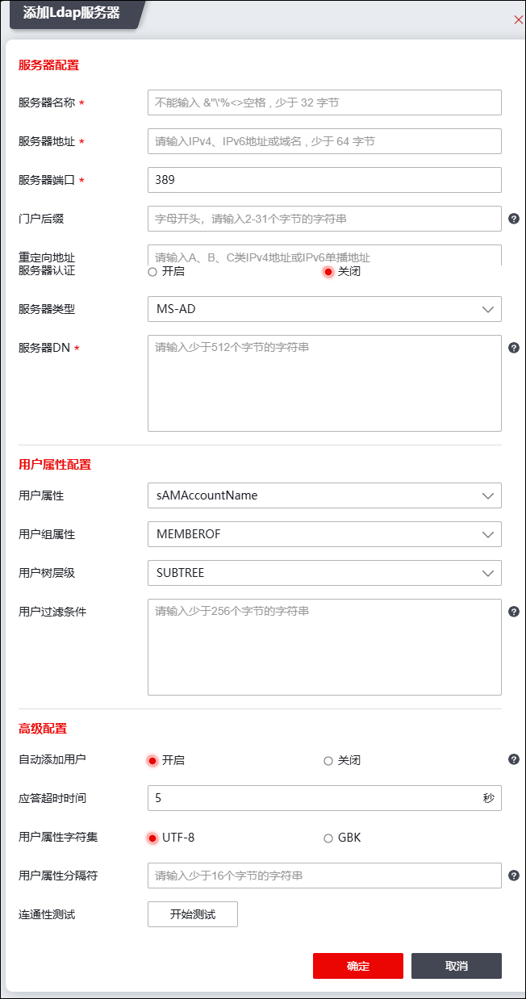
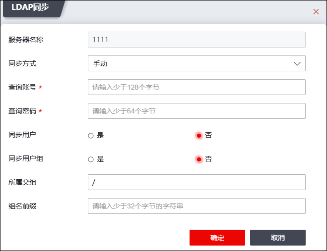

配置Ldap服务器的具体操作如下：
| 步骤1 | 选择 。 |
| 步骤2 | 添加Ldap服务器 |
1）点击“添加”，选择添加“Ldap服务器”，窗口如下图所示。

各项参数的具体说明如下表所示。
参数 |
说明 |
|
|---|---|---|
基本配置 |
服务器名称 |
必填项，输入Ldap服务器的名称。此处只能输入字母、数字，不能全为数字，且最大输入长度为32个字符（区分大小写）。 |
服务器地址 |
必填项，设置Ldap服务器的IP地址。点分十进制格式，例如：192.168.1.1。 |
|
服务器端口 |
配置Ldap服务器的监听认证请求的服务端口。取值为1-65535的整数，默认值为389。 |
|
门户后缀 |
设置门户后缀。门户后缀是用户进行身份认证的门户认证网站URL地址的一部分，门户认证网站的URL地址是“https://服务器地址:端口/portal/门户后缀/”。 |
|
重定向地址 |
设置A、B、C类IPv4地址或IPv6单播地址。 |
|
服务器认证 |
选择是否开启服务器认证功能。 |
|
Ladp服务器类型 |
选择该Ladp服务器的类型。 说明： Ldap是一个开放的协议，不同的公司有不同的实现方法，因此需要选择Ldap服务器的类型。可选项为MS-AD、SUN-ONE、NOVELL和other（分别表示微软公司的AD服务器、SUN ONE公司的Ldap服务器、NOVELL公司的Ldap服务器和其他公司的Ldap服务器）。 |
|
服务器DN |
必选项。配置该Ldap服务器的域名。此处需要输入域名分解格式（不同厂家的Ldap服务器需要设置不同的关键字。例如：假设AD服务器域名为“sina.com”则此处应输入“dc=sina, dc=com”。） 说明： 在Ldap服务器上可以通过“我的电脑”右键菜单的 来查看服务器所在的域。 |
|
用户属性设置 |
用户属性 |
设置一个属性的值作为Ldap服务器上用户名属性，也可选择自定义。 |
用户组属性 |
设置一个属性的值作为Ldap服务器上用户所关联的用户组。 |
|
用户树层级 |
设置用户树层级，可选择SUBTREE或ONE LEVEL。 |
|
用户过滤条件 |
设置Ldap用户过滤条件。最大长度为255。 |
|
高级配置 |
自动添加用户 |
设置认证成功后是否自动将此用户添加至该服务器中。开启表示自动添加，不开启表示不自动添加。 |
应答超时时间 |
设置该Ldap服务器的超时时间。为判断某个服务器是否失效，NGFW会向服务器周期性地发送请求报文，如果在超时时间内未得到服务器发回的应答，需重传请求报文。单位为秒；取值范围为1-180的整数，默认值为5。 |
|
用户属性值字符集 |
配置Ldap外部认证服务器返回的自定义属性的值的格式。可选项为GBK和UTF-8，默认值为UTF-8。 |
|
用户属性值的分隔符 |
设置当Ldap用户的一个属性值被分隔成多个时，每个值之间的分隔符号。范围：1-15字符。 说明： 属性值分隔符只针对资源、ACL、组。 |
|
连通性测试 |
点击【开始测试】按钮，可测试NGFW与服务器的连通性。 |
|
2）参数设置完成后，点击【确定】按钮完成Ldap服务器的添加。
| 步骤2 | 连通性测试 |
勾选Ladp服务器，点击“连通性测试”可检测该服务器与NGFW的连通性。
| 步骤3 | LADP同步 |
1）点击“LADP同步”栏的图标，如下图所示。

在设置LADP同步时，各项参数的具体说明如下表所示。
参数 |
说明 |
|---|---|
服务器名称 |
不能修改服务器名称。 |
同步方式 |
选择LADP同步方式，可选择自动或手动，默认手动方式。 |
查询账户 |
设置Ldap服务器查询账户密码。限LDAP 服务器上具有用户查询权限的用户，最大长度255。 |
查询密码 |
设置Ldap服务器查询账号密码，启用LDAP查询账号时需要设置此参数，最大长度63。 |
同步用户 |
选择是否同步ldap服务器上的用户到本地。 |
用户过滤条件 |
设置需要同步到本地的用户需满足的条件，格式为:(sAMAccountName=z*)，最大长度255。 |
同步用户组 |
设置同步ldap服务器上的用户组到本地。 |
用户组过滤条件 |
设置要同步到本地的用户组需满足的条件，格式为:(sAMAccountName=g*)，最大长度255。 |
所属父组 |
设置同步到本地的用户和用户组属于该组，最大长度31。 |
组名前缀 |
设置同步到本地的用户组赋予的组名前缀，最大长度31。 |
设置完成后，点击【确定】按钮，开始自动同步ldap用户。
| 步骤4 | 配置服务器认证安全策略。此处操作与Radius服务器一致，具体可参考 配置认证安全策略。 |
| 步骤5 | 用户认证。 |
1）在浏览器地址栏中输入门户登录地址，格式为“https://服务器地址:端口/portal/门户后缀/”（结尾“/”不能省略），例如：https://172.18.7.36:1025/portal/suffix/。进入门户界面，如下图所示。

2）输入用户的用户名、密码和验证码，点击【认证】按钮，NGFW即可对该用户进行身份认证。